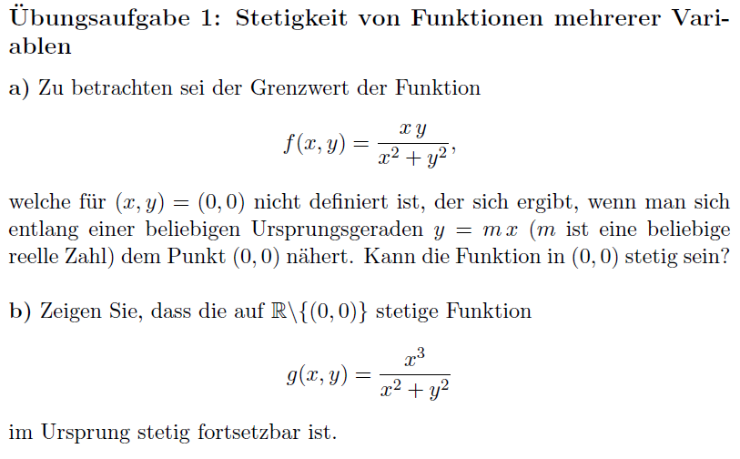
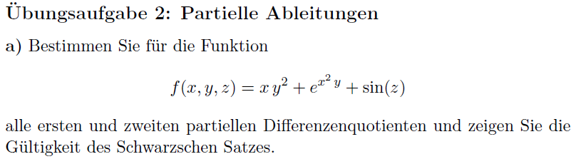
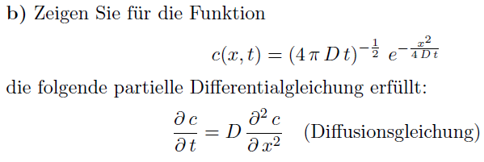
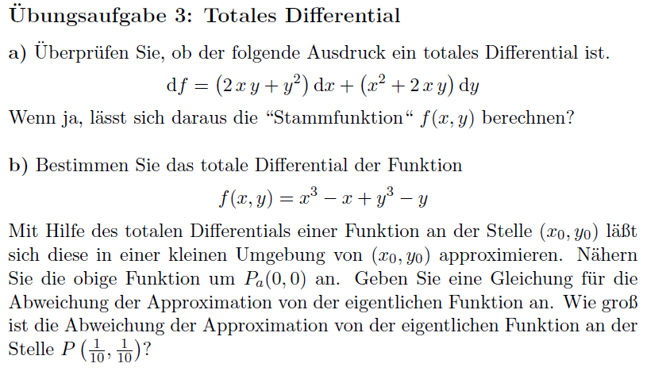

11. Übungsblatt Mathemathik I für ChemikerInnen
Die Übungsaufgaben sind dazu gedacht, Ihnen zu zeigen, wie die Methoden, die in der
Vorlesung vorgestellt wurden, in Anwendung gebracht werden. Sie erhalten die Lösungen
hierzu entweder in den Tutorien oder auf der ISIS-Seite des Kurses als Dokument oder
Lehrvideo.
1. Übungsaufgabe

Übungsblatt 11; Übungsaufgabe 1
Video zu Übungsaufgabe 1 (1/2)
VIDEO
Stetigkeit von Funktionen mehrer Variablen I
Urheberschaft liegt bei Fabian Kruse;
Verwertung fällt unter Lizenz CC-BY-SA 3.0
Video zu Übungsaufgabe 1 (2/2)
VIDEO
Stetigkeit von Funktionen mehrer Variablen II
Urheberschaft liegt bei Fabian Kruse;
Verwertung fällt unter Lizenz CC-BY-SA 3.0
2. Übungsaufgabe


Übungsblatt 11; Übungsaufgabe 2
Video zu Übungsaufgabe 2 (1/2)
VIDEO
Partielle Ableitungen und die Diffusionsgleichung
Urheberschaft liegt bei Fabian Kruse;
Verwertung fällt unter Lizenz CC-BY-SA 3.0
Video zu Übungsaufgabe 2 (2/2)
VIDEO
Partielle Ableitungen und der Schwarzsche Satz
Urheberschaft liegt bei Fabian Kruse;
Verwertung fällt unter Lizenz CC-BY-SA 3.0
3. Übungsaufgabe

Übungsblatt 11; Übungsaufgabe 3
Video zu Übungsaufgabe 3 (1/2)
VIDEO
Das totale Differential I
Urheberschaft liegt bei Fabian Kruse;
Verwertung fällt unter Lizenz CC-BY-SA 3.0
Video zu Übungsaufgabe 2 (2/2)
VIDEO
Das totale Differential II
Urheberschaft liegt bei Fabian Kruse;
Verwertung fällt unter Lizenz CC-BY-SA 3.0